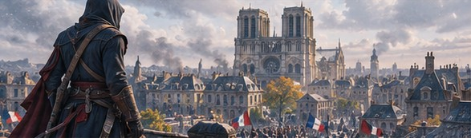

Protagonista
Arno Dorian
Un joven que se incorpora a la Hermandad y debe asumir las consecuencias de sus decisiones.
En plena Revolución francesa, Arno Dorian busca respuestas sobre la muerte de su figura paterna y se ve envuelto en las luchas internas de la Hermandad y los Templarios. París se convierte en un escenario urbano enorme y detallado.
En plena Revolución francesa, Arno Dorian busca respuestas sobre la muerte de su figura paterna y se ve envuelto en las luchas internas de la Hermandad y los Templarios. París se convierte en un escenario urbano enorme y detallado.
Este dossier reúne los personajes, el contexto histórico, los lugares y las actividades que definen esta entrega. La información está organizada para descubrir el juego sin perderse entre sus distintas capas.
Las figuras que dan forma a la historia de Assassin’s Creed Unity.

Un joven que se incorpora a la Hermandad y debe asumir las consecuencias de sus decisiones.
Una templaria cuya relación con Arno complica el conflicto entre ambas órdenes.
Asesino veterano que participa en la formación de Arno.
Militar que aparece en el contexto de los acontecimientos revolucionarios.
París · 1789–1794 · Una recreación histórica que combina acontecimientos reales y ficción.
Arno se mueve por un París convulso, entre revueltas populares, luchas políticas y conspiraciones. Su historia personal se cruza con la relación entre Asesinos y Templarios durante la Revolución francesa.
Regiones, ciudades y escenarios que dan personalidad a esta aventura.
Ciudad abierta con barrios, plazas, interiores y monumentos.
Escenario de los primeros acontecimientos de la historia.
Lugares emblemáticos que forman parte de las misiones y la exploración.
Los sistemas principales que definen la forma de jugar esta entrega.
Movimientos de ascenso y descenso más diferenciados.
Agacharse, cubrirse y planificar infiltraciones.
Armas, equipo y atuendos con estadísticas.
Misiones que pueden jugarse con otros Asesinos.
Casos de asesinato con pistas y deducciones.
Exploración de interiores, calles y tejados.
Qué hacemos durante la aventura, cómo exploramos el mundo y qué sistemas conviene dominar.
Investigar escenas de crimen, examinar pistas y reconstruir lo sucedido
explorar interiores y tejados
sincronizar atalayas
completar misiones cooperativas y actividades de París
preparar infiltraciones con rutas y herramientas.
Detalles y sistemas especiales que merece la pena descubrir durante la exploración.
Las investigaciones de asesinato permiten reconstruir escenas y señalar sospechosos.
Los enigmas de Nostradamus conducen a símbolos y recompensas especiales.
París contiene interiores accesibles y pasadizos que facilitan el sigilo.
ARCHIVO EN AMPLIACIÓN · Se añadirán ubicaciones concretas y capturas propias a medida que se complete la documentación de cada juego.
Apostó por una recreación urbana densa, interiores explorables, parkour refinado y cooperativo para cuatro jugadores.